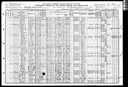

My Family Tree
Person Chart
Parents
| Father | Date of Birth | Mother | Date of Birth |
|---|---|---|---|
 Michael Noonan Michael Noonan |
 Mary McGinty Mary McGinty |
Partners
| Partner | Date of Birth | Children |
|---|---|---|
| Ellen E Hepler |
1864 | James P NoonanJoseph F NoonanJohn D NoonanLeo NoonanMary NoonanFrank Joseph Noonan |
Person Events
| Event Type | Date | Place | Description |
|---|---|---|---|
 Birth Birth |
1871 | Zerbe Newtown, Schuylkill, PA | |
| Marriage |
1892 |
Notes
| lived at 5014 Spruce Street, Philadelphia, PA Occupation - teacher -Supervising Principal of Schuylkill Township Schools Owner of a Tap Room in Pottsville at some point |
Sources
| Description |
|---|
| Year: 1910; Census Place: Reilly, Schuylkill, Pennsylvania; Roll: T624_1418; Page: 1A; Enumeration District: 0075; FHL microfilm: 1375431. |
Media
Pictures

1910 Census Joseph C Noonan